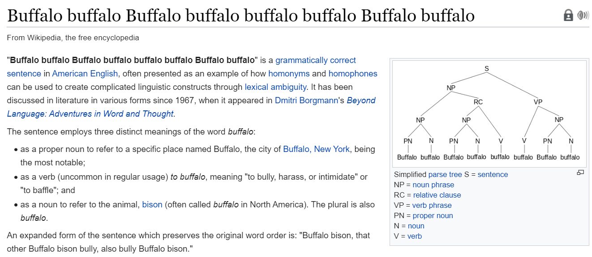

2.4 Advanced Preprocessing
POS tags, a first look at entities, and why parsing is optional.
1. When the basic recipe is the wrong tool
Notes 2.2–2.3 get you a bag of tokens. Some jobs need who did what to whom, or which span is a name.
Example. Find person and organization names in a million company documents. Lowercasing and stop-word removal hide the signal. You want part-of-speech (POS) tags first: proper nouns are a cheap clue for names. Then you want named-entity recognition (NER). Full parsing is the heavier option when you need syntax, not just tags.
This note is a map, not a tagger from scratch. You will use NLTK or spaCy.
2. POS tagging
Given a sentence, attach a syntactic category to each token:
This is a simple sentence
This/DET is/VB a/DET simple/ADJ sentence/NOUN
POS is a first step toward syntax, and syntax is a first step toward meaning. A tagger is simpler and faster than a full parser, and often enough:
- features for text classification
- word-sense disambiguation (
wateras noun vs verb) - a pre-filter for NER (proper nouns)
3. Why tagging is hard
The same string is not always the same tag.
| String | Noun | Verb |
|---|---|---|
| water | glass of water | water the plants |
| lie | tell a lie | lie down |
| wind | a mighty wind | wind down |
Time flies like an arrow has several legal analyses. Add words you have never seen, or a noun used as a verb (to google), and a dictionary alone fails.

Other headaches: context, dialect, overlapping categories, and out-of-vocabulary words.
4. Penn Treebank
You need a labeled corpus to train or to evaluate a tagger. The Penn Treebank (1989–1996) is the English standard you will see cited:
- about 7 million words with POS tags
- millions more with partial or full parses
- spoken transcripts marked for disfluency
Sources include Wall Street Journal, IBM manuals, nursing notes, and telephone speech. The WSJ section is what most off-the-shelf English taggers were measured on.
The tag set is coarse but useful: NNP proper noun, VB/VBD/VBN verb forms, JJ adjective, DT determiner, and so on. NLTK’s pos_tag returns these tags.
5. How taggers are built (high level)
Rules. Start with a dictionary of possible tags per word. Assign every possible tag. Write rules that delete the wrong ones until one tag remains (ENGTWOL-style). You need a large lexicon and a patient linguist.
Probabilistic. For tokens (w_1,\ldots,w_n), find the tag sequence (t_1,\ldots,t_n) with the highest probability. Hidden Markov models and related sequence models are the classic version.
Machine learning / deep learning. Sequence classifiers and neural taggers. They are strong, but they are not automatically cheaper than a good stochastic tagger. Cost still matters.
In this course you do not train one from scratch. You call a library:
import nltk
from nltk.tokenize import word_tokenize
text = "Charles Spencer Chaplin was born in London England on April 16th 1889"
nltk.pos_tag(word_tokenize(text))
spaCy does the same in one pipeline object and is what you want if you also need NER.
6. NER and other span labels
Named-entity recognition labels spans, not only single words:
Barack/PER Obama/PER spoke/NON from/NON the/NON White/LOC House/LOC today/NON
Typical types: person, organization, location, date, money. Everything else is O / none. POS helps; it is not NER by itself. White House is two tokens and one entity.
Field segmentation is the same idea on a fixed template: in a classified ad, mark price, size, location; in a bibliography, mark author, title, year.
7. Parsing, at a high level
A parser builds a tree (constituency) or a graph of heads and dependents (dependency). That is how you get subject–verb–object without writing a new regex per sentence.
You need a parse when the task is syntactic (relation extraction, some question answering). You do not need one to start a bag-of-words classifier. Parsers are slower and they error on messy web text. Use tags first; parse when the extra structure pays for itself.
8. Practice
-
Tag
I saw her duckin two different ways. What changes besides the POS ofduck? -
Why is lowercasing a bad idea before POS tagging?
-
Is “every capitalized word is a person” NER? Give a counterexample.